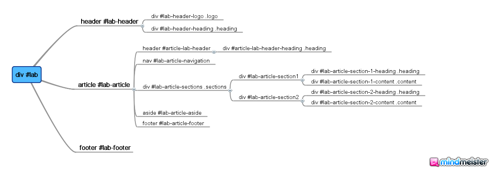
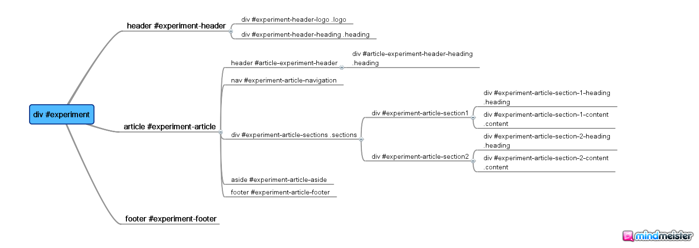

documentation
Table of Contents
- 1 Introduction to UI Toolkit
- 2 The UI Template structure
- 3 How to use the template?
- 4 Procedure for using scripts
- 5 Necessary Instructions
1 Introduction to UI Toolkit
The UI Toolkit consists of the UI 1.0 template and the helper scripts that extracts the content of labs hosted with Amrita UI format to UI 1.0.
1.1 Why is this needed?
For two reasons: One is uniformity i.e uniform user interface for authoring and interacting with the virtual labs. Also, effective use of these labs depends on simple and uniform web interfaces and a homogeneous hosting framework. Secondly, if better versions of the template are created in the future, the lab content can be automatically transferred.
1.2 When should we use it?
Once your sources are ready with the content i.e (theory, procedures, experiments (simulations), quiz, images, videos etc). Before we move on to the procedure, it is essential to understand the structure of UI template 1.0.
2 The UI Template structure
2.1 file:html-lab-page-design.png
This is the general structure of the template
2.2 
This is how the html page of the lab should look like with respect to id.
2.3 
This is how the html page of the experiment should look like with respect to id.
3 How to use the template?
3.1 Case 1: Newly built labs
Mention the lab name under header and place the tabs content under article followed by sections and order the articles accordingly. Also, list out the experiments in content.html. #image This is the procedure that needs to be followed for any newly built lab.
3.2 Case 2: Labs hosted with Amrita Format(Collaborator Framework)
For converting the labs that are using Amrita format, we have scripts in the UI toolkit that automatically extracts and converts them to UI 1.0.
4 Procedure for using scripts
Let me start with an example, say for the lab chosen at a random is given by the following url: (http://iitkgp.vlab.co.in/?sub=39&brch=124&brch=124&sim&sim=922&cnt=1) Here the breakup of the url is as per the following scheme, firstly the labs are classified under subjects or domains indicated by "sub" and then each branch or lab under those domains is indicated by a seperte "brach" number. After that each experiment in the lab is indicated by a simulator number named in the url as "sim". Lastly the count or "cnt" number indicates the breakup of pages under each experiment, namely theory, introduction etc.
As per the given url in the example we have sub=39, as the "Electrical Engineering" domain and brch=124, as the "analog signals, network and measurement laboratory", finally the sim=922, refers to the experiment named "Verification of Superposition Theorem" and cnt=1, indicated the "Theory" page under it.
4.1 organize.sh
4.1.1 Denition
Shell script to get the contents from the lab url and store them in an organized format as university ! subject ! branch ! labs ! experiments.
4.1.2 Method
Here the structure of the lab is analyzed and accordingly the script breaks up the url and creates folders recursively in an organized format as per that in the above denition.
4.2 transfer.py
4.2.1 Denition
Python based script to transfer the contents under one labexperiment in an automated way to the requisite UI format say the new Blueicon theme format.
4.2.2 Method
A Python library called "Beautiful Soup", designed to parse lxml, html5 files and tree traversals has been here used to parse the contents of each labexperiment's html files. These parsed contents are mapped to the Blueicon theme format and copied into the "content.html" by use of python commands. Ref: http://www.crummy.com/software/BeautifulSoup/
4.3 linkchanger.sh
4.3.1 Definition
Shell script to link the images downloaded in the user les folder to contents.html of the lab-experiments mapped using the former scheme.
4.3.2 Method
Here the script replaces the path of the images inside each content.html le for all experiments in the lab with the appropriate and desired path of the new directory after the mapping is over.
5 Necessary Instructions
The following instructions are needed to be followed the task of succesfully porting the content from one under the Amrita model theme to be blue icon one.
5.1 Download and store the content
5.1.1 Create a folder called "map"
> mkdir map
5.1.2 Move into the folder "map"
> cd map
5.1.3 Getting the content from Amrita's url
Run the wget command under the some directory. > wget -r -e robots=off http://iitkgp.vlabs.co.in Note: It is neessary to override robots.txt file to download the images along with the other contents of the lab.
5.2 Organize the downloaded content
Run the organize .sh file and prior to that give it execute permission. > chmod 777 organize.sh > ./organize.sh
5.3 Execute the transfer of contents for a lab
Given a lab we have to run the code manually for each page and more precisely for all the "cnt" number in our case under each experiment(sim). The command to do it articulately are given in following subsections:
5.3.1 Go inside the subject->branch->lab->experiment
use cd command followed by path name.
5.3.2 Download a blank repository having the desired theme
> svn co svn+ssh://<username>@svn.virtual-labs.ac.in/labs/<labname>/svn/<Repository Name>
5.3.3 Transfr the content into blue icon theme format
Give execute permissions to the python script "transfer.py" and then run the following commands > ./transfer.py Input the source filename and the destination filenames.
Note: The source filename is usually the html or php page you want to transfer the contents from and here the destination filename refers to the contents.html downloaded as a part of the sample repository, after svn checkout, which is already in the blue-icon theme format.
5.4 Update the links to the images
Run the last script, by using the command, "> ./link_changer.sh". Don't forget to provide execute permission to the shell script before running it.
Note: You also need to copy the whole user files folder got after running the wget command, inside each experiment's images folder.
5.5 Observe the UI transfer(mapping)
Run the make and build to observe the transfer incorporated by the former commands.